Spatial data handling in QGIS
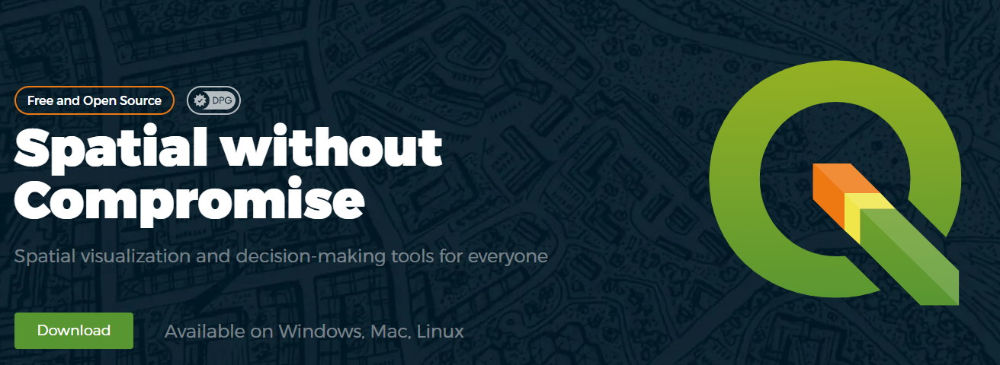
Overview
In this session students will learn how to manage and present spatial data using Geographical Information System (GIS) software.
QGIS is a popular alternative to paid GIS software and provides an interface with other open source GIS such as SAGA and GRASS. It has a large user base and extensive support options with easily accessible tutorials, user guides and forums. Similar to R there are numerous volunteers contributing to the development of QGIS with “Plugins” available for tools to improve functionality. GIS specific software such as QGIS predominantly use a graphical user interface (GUI) - aka pointing and clicking - and so are thought to be more user-friendly. While a little advanced for this module it should be noted that you can run R commands in QGIS and also access QGIS processing functions from R.
This tutorial will give step-by-step instructions that you can use to follow along with the instructor.
Objectives of tutorial
- To become familiar with QGIS
- Adding vector and raster data to your QGIS project
- Explore vector attributes
- Adding tabular data and joining vector data
- Creating maps for publications and reports
QGIS Interface
On opening QGIS from your computer familiarize yourself with the QGIS interface. Hovering your mouse over symbols will give additional information for most items.
- Menu Bar: Provides access to various QGIS features using a standard hierarchical menu.
- Tool Bar: Provides access to most of the functions as the menus, plus additional tools for interacting with the map.
- Browser panel: Used to locate, inspect and add data to your project. You are able to browse you own computer and additional resources
- Map View or Map canvas: The map displayed in this window will depend on the vector and raster layers you have chosen to load. Here you can interact with the map - move the maps, zoom in/out, select features etc
- Layers list: lists the layers that are available in the current project. Hovering over layers will give some basic information. Layers can be toggled on/off here and right-clicking on a layer will give several additional options explored later in the tutorial.
- Status bar: The status bar shows you your current position in map coordinates as the mouse pointer is moved across the map view.
- Processing toolbox: This panel may not be visible when first opening QGIS. It contains many analytic tools used when delving deeper into GIS analysis
Panels can be added and removed from the drop-down menu bar > View > Panels
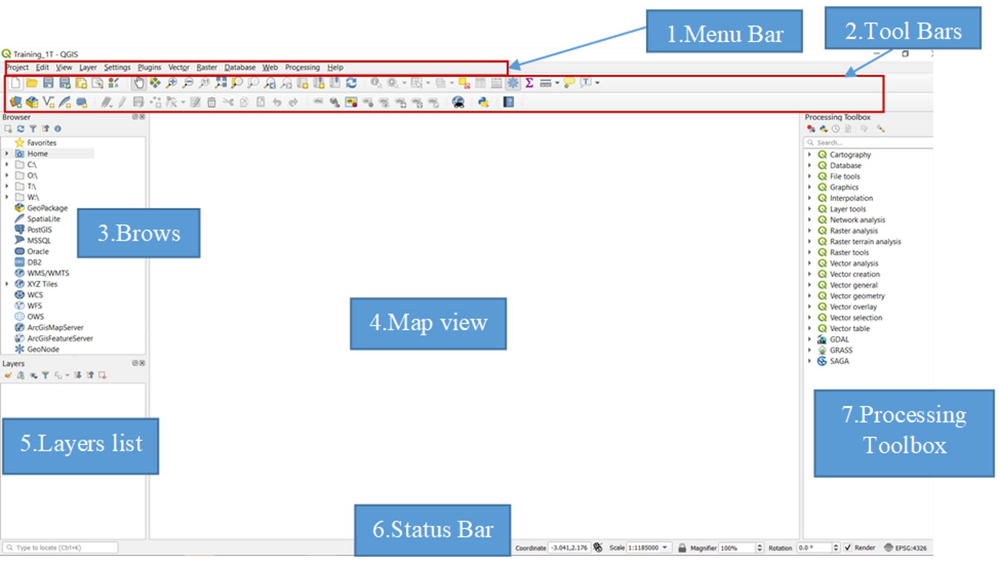
Polygon shapefile components
Shapefiles are a common file format for vector data and are comprised of multiple files; three that are mandatory and many that are optional:
- The main file has the extension .shp and contains the feature geometry
- .shx files contain the indices of the feature geometry
- .dbf files store the attribute data and object IDs. These files can be opened in Microsoft Excel, but cannot be edited there
- Many shapefiles will also have an optional .prj file that contains metadata for the coordinate and projection system associated with the data
The shapefiles that we will be using for this session are the Fakeland health districts (FAK_HDs) and can be found following folder:edit when location known. Usb or … /MAP Spatial Analysis Course/ASTMH/shapefiles/ . We will now learn how to add the shapefiles to GIS, explore the data they contain and join them to non-spatial data.

A detailed description of shapefile components can be found here
Adding layers
There are multiple ways of adding layers to your QGIS project. The numbered bullet points below outline a few options. Try them out after class and see which you prefer. For now, we will follow option 1. Note that you should always add the .shp file of the shapefile components.
- From the menu bar Layer > Add layer > Add Vector Layer.
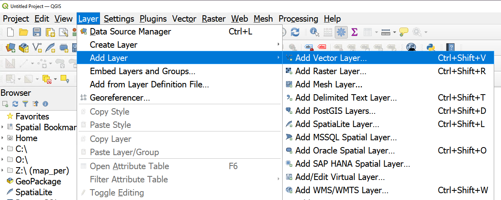
- From the popup window click the three dots (indicated 1 below) and navigate to the files you wish to add. 3.Click add (2) - this will add the shapefiles to QGIS, and then you can close the pop-up window (3).
You may have noticed in the left hand panel that there are many types of data that can be added to the project. We use “Add Vector Layer” this is for lines and polygons. Later in the tutorial we will also add point data as well as non-geographic tabular data (Delimited text) and raster data.
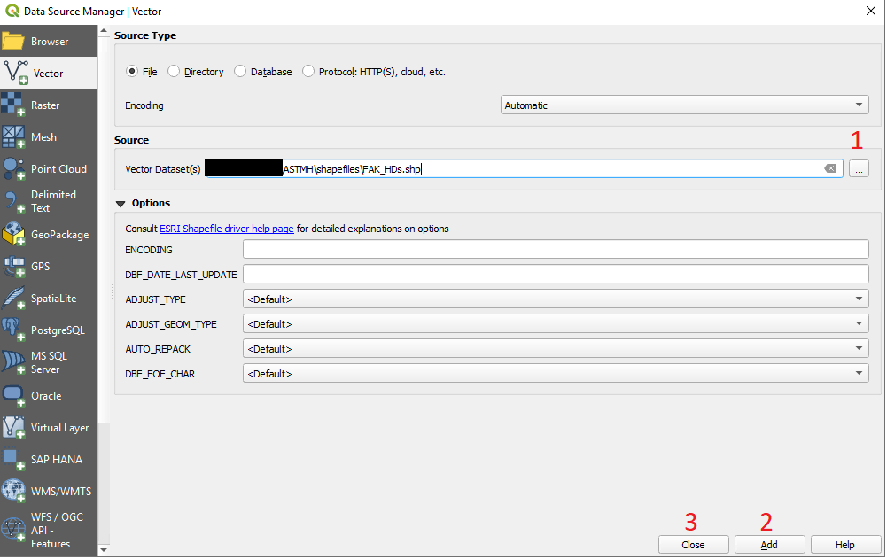
Try these options after class:
- On the toolbar click the “Open data source manager” icon 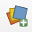. The popup window will be the same as option one and so you will follow the same steps, just make sure “vector” is selected on the left hand side.
- From the “Browser panel” navigate to the folder where the files are located and to add double click on them.
- Finally, you can simply drag and drop files directly from your computer folder into the map canvas or layers list
Exploring the shapefile
You should now see the Fakeland health districts on your map canvas with each district boundary being represented by a different polygon. Note that when adding layers QGIS will randomly assign colors and your map will be a different color. We will show you how this can be changed shortly, but first you can explore the shapefile.
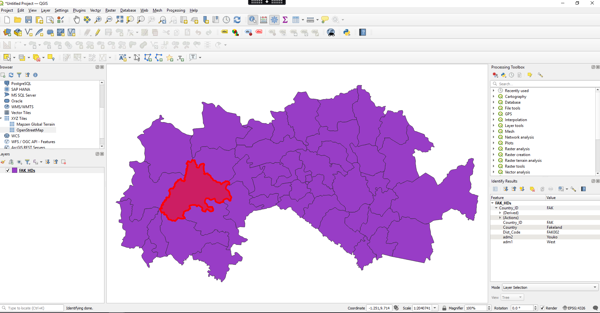
- Click on the identify features icon

- Then click on an area of the shapefile.
- You will notice that the area is highlighted in red and information about that particular polygon will be displayed on the right. We see that the shapefiles contain basic information about the country_id, region name, district name and other id codes useful for identifying administration areas.
- You can move the map by clicking on the pan map icon 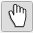 and then clicking and holding on the map canvas.
- You can also zoom in and out with your mouse scroll wheel or trackpad (note these can be very sensitive) or by clicking on the zoom icons 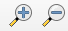.
- If the zoom gets a bit out of control, and you lose your map it is always possible to recenter your map again by right-clicking on the FAK_HDs in the layer menu and then select “Zoom to layer”
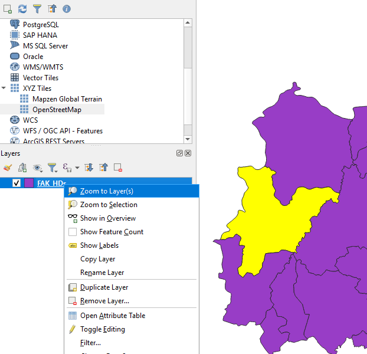
Checking and setting layer CRS
- You can check the layer CRS by hovering your marker over the FAK_HDs layer
- Right-click on the layer and go to the “Layer CRS” option. Here you will see the layer CRS at the top and some options to change the setting.
- Select “Set layer CRS”
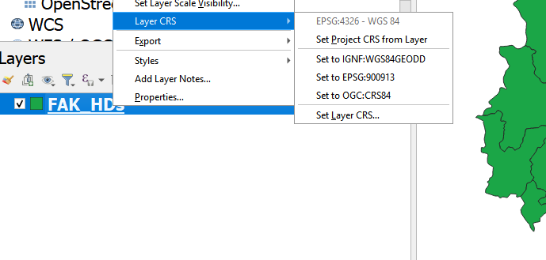
- If you are using a specific CRS you can search for it in the “filter” box. You can also browse the different CRS in the “Predefined Coordinate Reference System” menu. If you select one information about that CRS will be displayed at the bottom.
- We will be using the WGS 84 - EPSG: 4326 CRS. If your layer is not yet set simply select this CRS and click OK.
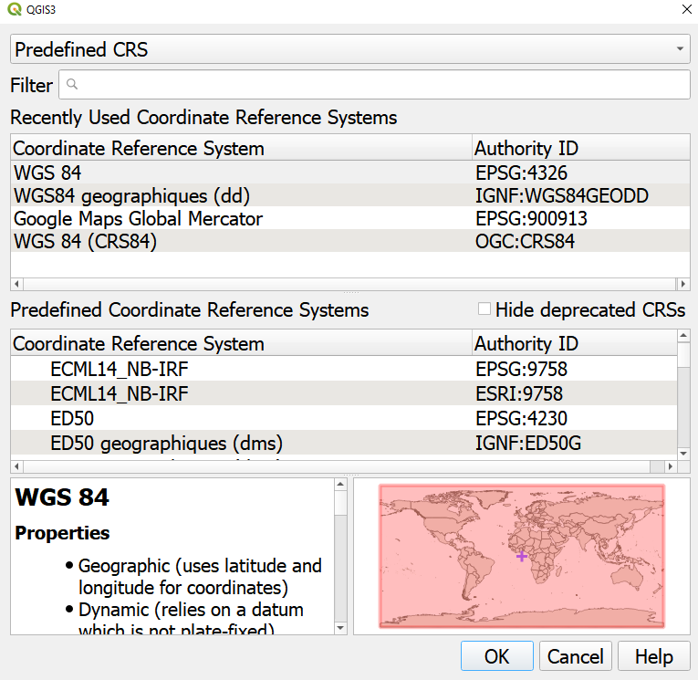
The attribute table
Information regarding the features can be found in the attribute table. The attribute table is a tabular data set containing all the non-geographical information about each feature. In this example each health district is a “feature” (represented by rows in the table) and they have a number of attributes (columns) or variables linked to that health district. Currently, the attribute table contains basic information on the names of the health districts and what regions they are in - but attribute tables can also store numerical data needed for mapping populations and disease burden.
- To open the attribute table right-click on the layer (1) and select
 .
.
- Each row in the table represents a feature, and each column is a field (variable) that is associated with the feature. Features in the table can be searched, moved or even edited. Features in the table can be selected and they will be highlighted in yellow on the map canvas. In the example below we have selected Tangue administration 2 unit and the yellow highlight shows us where it is on the map (2).
- Try clicking on other features in the table and explore where they are - to make it easier to see the features selected on the map you can “dock” the attribute table window by clicking on the dock icon 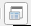.
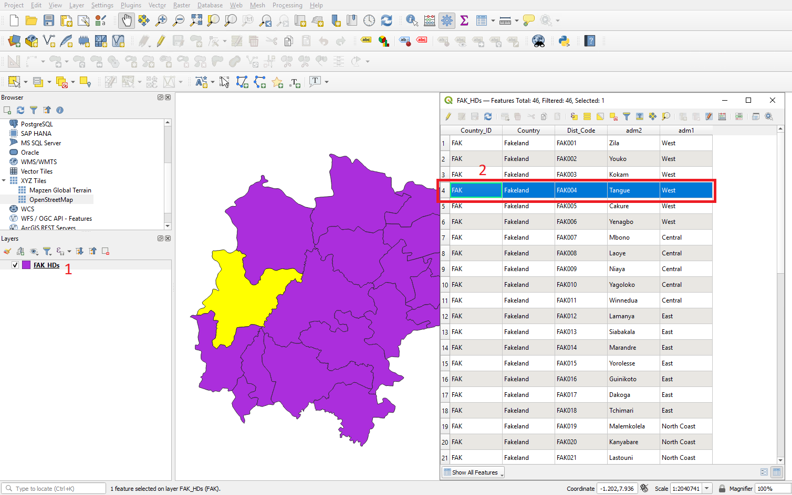
- It is also possible to search and select features in the attribute table. Let’s select all the Admin 2 units named in the Admin 1 region “East”. At the top of the attribute table there is a tool bar - click on the filter by form icon 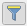(1).
- In the box next to Adm1 (2) type “East”.
- The drop-down menu (3) should currently be set on “Contains”. Note the other options - “equals to” for example gives an exact name match. Selecting “Contains” returns any name with east in it such as “North east”, “South East”. In our case we only have one name with “east” so either “contains” or “equals to” will work.
- Click on “select features” (4) and look at the map to see what has been selected.
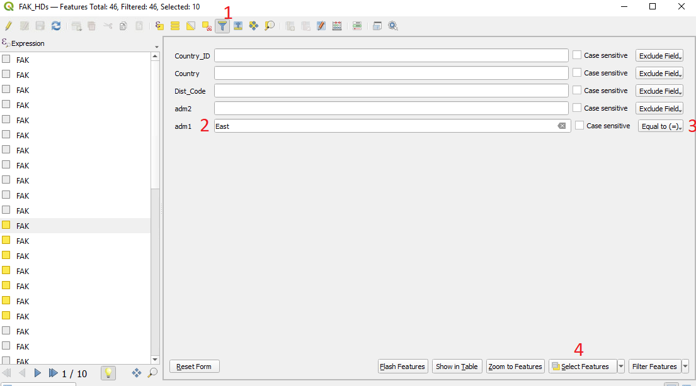
- We can return to the table view for the attribute table by clicking the table view icon 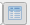in the bottom right hand corner of the attribute table window.
- We can then click the symbol 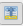 to move all the features we selected to the top of the attribute table. If we look at the Admin1 that have been selected we can see East has been selected
- You can also zoom in on the area you selected by clicking on “Zoom to Features”
In the previous example we selected features based on a single condition (Adm1). However it is possible to select based on multiple conditions. There are many available tools in the attribute table - for example it is possible to edit the data here and produce new fields with the field calculator. We will not go through examples here but for further reading please see: here
Why use selection tools?
The selection of features is a key skill when working in QGIS - it is essentially used to subset data. For most operations in QGIS there will be a “Use only selected features” tickbox that will apply the operation to your selected subset. Note - there are also certain processing tools that will only apply to the selected features (and apply to all features if none selected) so you have to be aware of your current selection. The toolbar provides a variety of options for selection:
- We will conduct basic selection using the select features tool
 . First click on the icon
. First click on the icon
- On the map canvas you can click on individual features to select them. To select multiple features you can hold down the “ctrl” button on your keyboard. You can also click and drag a selection rectangle that will select all features that it touches. Note that the features you select will also be highlighted in the attribute table.
- Finally the simplest way to un-select features is to use the select
tool
and click the white
space off to the side of the shapefiles.
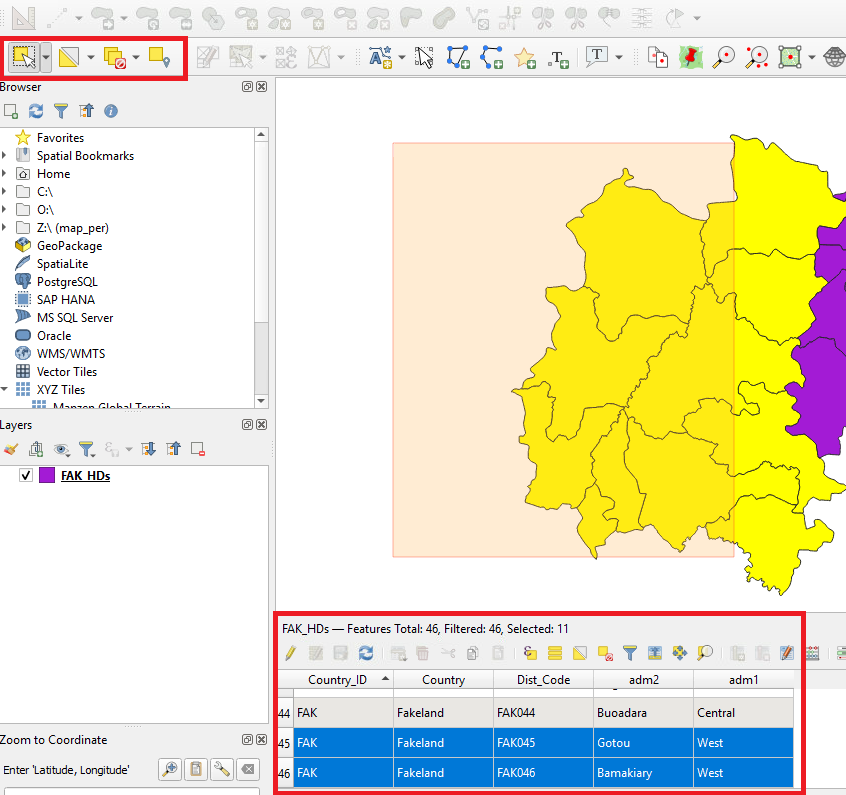
Change properties of map
Symbology
- To change the color of the map either:
- Double click on the layer in layers panel 1
- OR right click with cursor on the layer and select “properties”
- Click on symbology 2
- Click single symbol 3,
- Click simple fill 4
- We can change the colour by clicking on “Fill color” 5 and select the colour of your choice. If you do not want a fill colour click on “Fill style” and choose “No Brush”. You can also adjust the properties of the polygon outline here.
- When you are happy with your choice click “Apply” and “OK” 6.
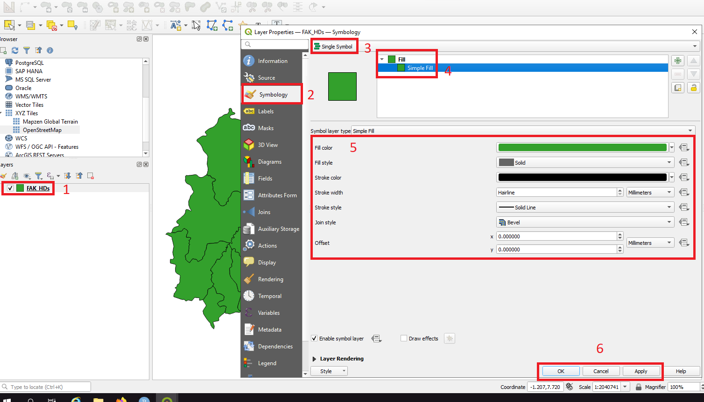
Adding Point data
Point data is a very common form of data used in health surveillance and research. In the following example the points represent individual health facilities. In contrast to the polygon shapefiles we explored above, point data can be stored in a single spreadsheet file that contains latitude and longitude coordinates for each point. Note that QGIS can only read delimited text files - the most common form being comma-separated vales (.CSV) files. If you are working with an excel spreadsheet you must first save it as a cvs before you can load it into QGIS. Further note that Mac users may need to specifically save it as a Windows CSV file
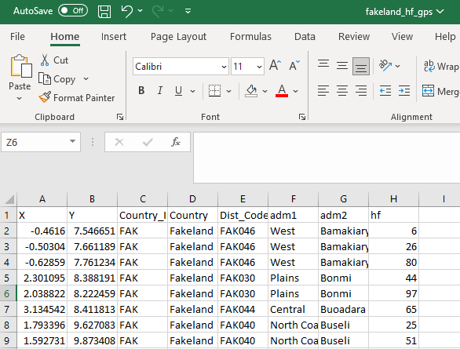
- From the menu bar select Layers > Add layer > Add delimited text layer.
- Click the browser icon 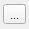 and navigate to the file “fakeland_hf_gps” in the “Data” folder.
- Select “CSV” file format and select “first record has field names” from Record and Fields Options.
- This file contains point coordinates that can locate the data geographically. We therefore need to select “point coordinates” from the Geometry Definition and from the x and y fields select x and y respectively (terms used instead of x and y are; latitude and longitude, or North/South and West/East readings). It is a common error to input the coordinates the wrong way around but this should be very obvious from locations of the points on the map canvas
- Finally, there will be a preview of the attribute table associated with the gps points. You can make basic changes to the field type here if needed.
- Click add and Close

You will now see the points added to map canvas and Each point is a
different health facility. Like with the polygon shapefile we can open
the attribute table to see
what data is available for each health facility.
Point Symbology
- Following similar steps to changing the symbology of polygons
either:
- Double click on the points layer in layers panel
- OR right click with cursor on the points layer and select “properties”
- Click on symbology
- Select Single Symbol from the dropdown menu
- Click Simple Marker 5.There are multiple options presented from changing the colour and size of the point to changing the shape. For now we can change the colour by clicking on “Fill color”. Note that stroke colour is the colour of the boarder
- When you are happy with your choice click “Apply” and “OK” 6.
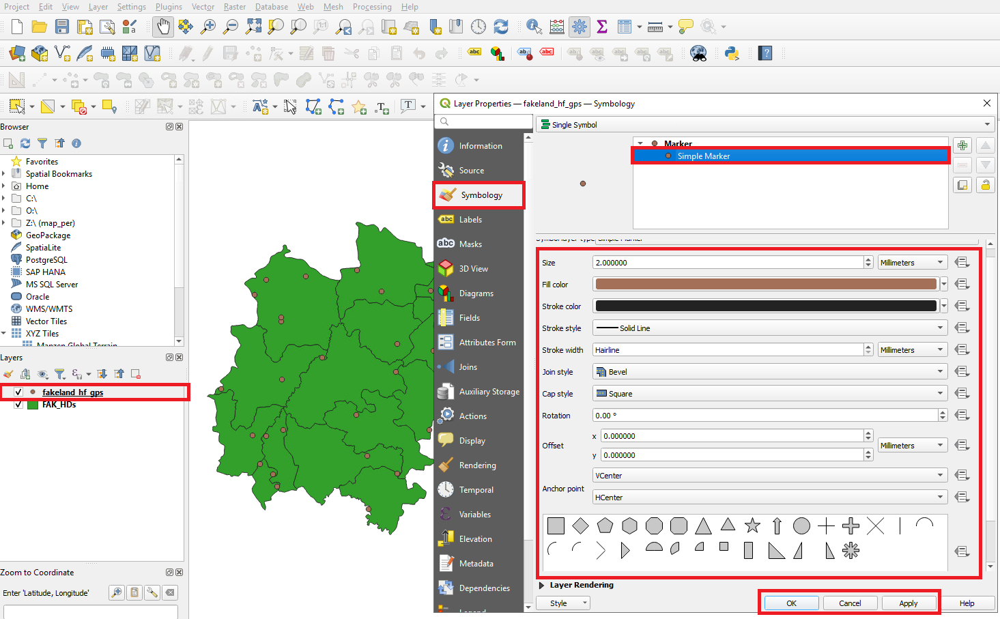
Optional Extra - Labeling
It is also possible to add labels to the map.
- As before, open the properties window.
- Under the symbology symbol click on labels.
- Select “Single Labels” from the first dropdown menu.
- From the “Value” drop-down select which attribute you want to label the polygons with. For now select “hf”. This is the unique health facility ID number.
- Click “Apply” and “OK”
- There are many other style choices for text font, size, color,
positioning etc that can be explored here - try a few of them. Note that
labeling maps can often lead to busy/cluttered hard to read maps so
unless absolutely necessary minimize labeling to main points of
interest.
- To remove the labels select “no labels” from the original drop-down menu.
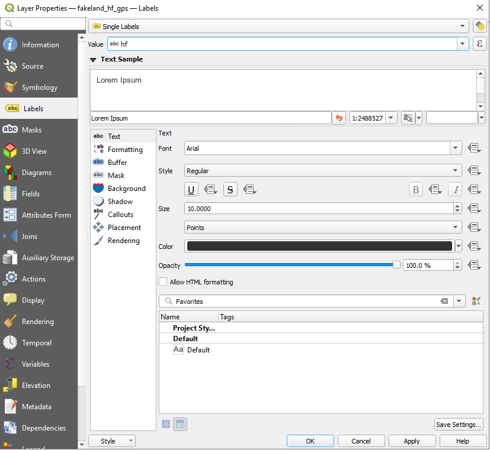
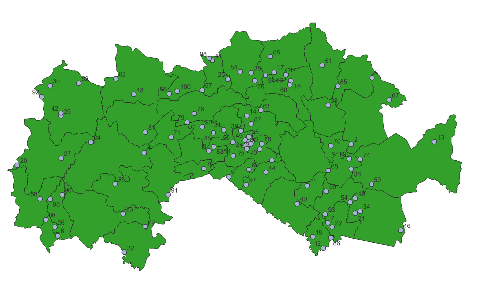
Layer visibility
If you are new to GIS you may be wondering why we keep referring to the data as “Layers”. Maps are often built up from several data sources and types and they have to be layered/stacked in a certain way so that each component can be visualized.
In QGIS the order you see the layers in the layers panel represents the order you will see them on the map canvas (the layers at the top of the list you will see first). You can rearrange the order of the layers by clicking and dragging.
You can also turn on/off the layers using the tickbox next to each layer - try un-selecting the points layer.
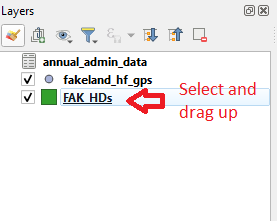
You will notice that the point data must be on top to the polygon data for it to be visible. Currently we only have two visible layers but maps may contain many layers if there are new shapefiles for roads, waterways, railways, buildings etc.
Layer demonstration - adding admin1, admin0 and lines
In the animation below you will see that there are several layers in the layer panel. Initially the FAK_roads and the hf_gps points are below the FAK_HDs - they have to be moved above the FAK_HDs layer to be visible. Note also that the layers are being turned on with the tickboxes in the layers panel
knitr::include_graphics("images/03_qgis/vid1.gif")
Saving a project
- To save a QGIS project, select “Project” from the top-left corner of the toolbar and click “SAVE AS”.
- Save it in an appropriate folder and name the project as “MAP_training” and click “SAVE”.
It is important to note that QGIS does not store any data and so when reopening a project QGIS follows the file paths to the data you provided earlier. If the location of the shapefiles and/or data changes QGIS will be unable to open them. QGIS will maintain any changes to symbology.
The project can be reopened from the folder where it was saved or alternatively simply open QGIS and you will see links to previous QGIS projects
Data Joins
We regularly work with data that is yet to be linked with a geometry, for example, a table of data containing the number of malaria cases per administrative unit. While this data contains a name for a geographic location it cannot be mapped alone - it needs to be joined with existing shapefiles of those administration units.
To join the two data types of data they must have a key shared value (e.g. Admin unit name) and we can conduct what is called an “Attribute Join”. We will walk through this below.
An alternative join is the “Spatial join” and can be conducted if both data types are geolocated (for example the tabular data may have GPS locations). This means that a key variable isn’t necessary.
Addtion of tabular data (no geography)
- First we have to add the tabular data. From the menu bar, click “Add Layer” and then click “Add Delimited Text Layer”.
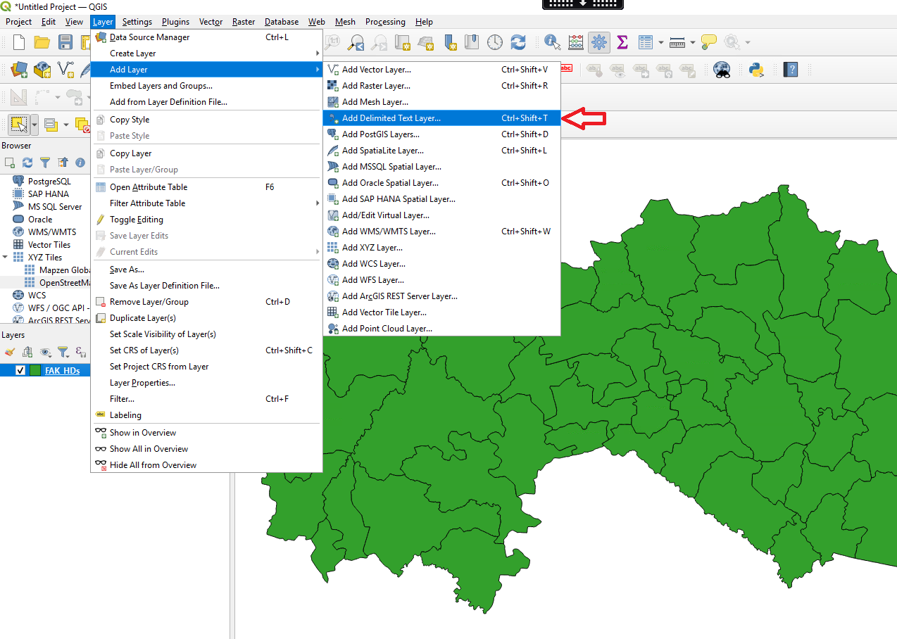
- Click browser (three black dots) 1 and select the file “annual_admin_data” from the /data folder for this session.
- In the window that pops up, choose “CSV” under “File Format” 2, “First record has field names” under “Record and fields Options” 3 and “No geometry (attribute only table)” under “Geometry Definitions” 4. Note the difference to when we loaded the health facility point data
- Then click “Add” and “Close” 5.

You will now see that annual_admin_data has been added to the “Layers
panel”. Take a look at the data by opening the attribute table . This is an example malaria
surveillance dataset. For each Admin 2 unit of Fakeland, it outlines the
number of malaria tests and confirmed positive results. The results are
broken down by type of test (RDT or Microscopy) and age range of the
patients under 5yrs (u5) or over 5yrs (ov5)
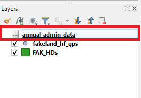
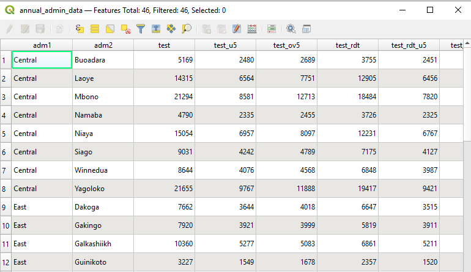
Currently the data is not associated with any geometry so it will not be displayed on the map canvas. We will now join it to the existing Fakeland admin units.
Attribute join
Attribute join
We have tabular data with no geometry we will have to use attribute join to link it to the existing health district shapefiles. This process will take the tabular data and add it to the attribute table of the shapefile. Before we go onto show you how we do this in practice can you identify the key attributes that we will use to join the data? What attributes do the tabular data and shapefiles have in common?
- Double click on the FAK_HDs layer 1 .
- On the right hand side where we previously selected symbology and labels - select the “Joins” tab 2 .
- Near the bottom of the window click 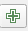 3 to pop up a new window.
- In the window, choose “annual_admin_data” from “Join layer”
dropdown, “adm2” from the “Join field” and “adm2“ from the Target field”4 . Note that this will join matching
names so the data has to be cleaned beforehand
- Select 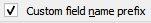 and delete the prefix “annual_admin_data_” and click OK - If you do not delete this then the prefix will be added to all field names.
- Click “Ok” 6.
- The previous window will close - then click “Apply” and “Ok” on Layer Properties.
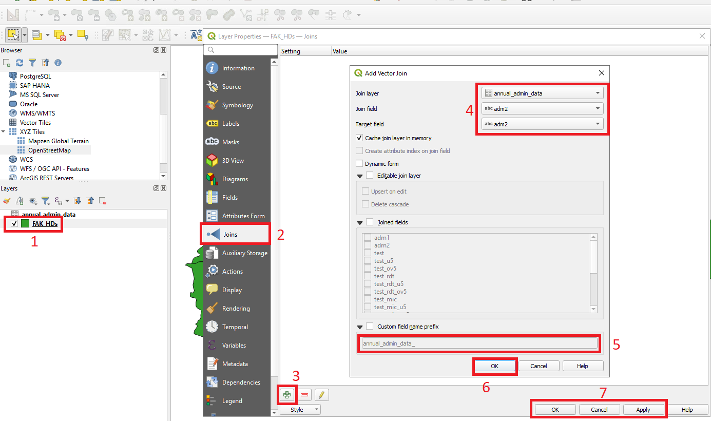
Now open the attribute table of the FAK_HDs layer - what do you see? The annual_admin_data malaria data are now included in the FAK_HDs shapefile.
Data sets and shapefiles can then be joined based on attributes such as the name of the administration unit. Note that joining by name can commonly cause errors because if there are differences in spelling, use of capitals or punctuation the names will not be matched - they must be exactly the same. Data must be clean beforehand but it is also common to join by standardized administrative codes that are less prone to error.
Raster data & Zonal statistics
Raster data
We will now see how to load raster data. We will be using a population raster that gives an all age population count for each 5x5km pixel.
- To add raster, select “Layer” from the menu bar
- Select “Add Layer” and select “Add Raster Layer”
- Choose “ihme_corrected_worldpop_All_Ages_3_2018.tif” from the “Raster” folder
- Click Add and Close the window.
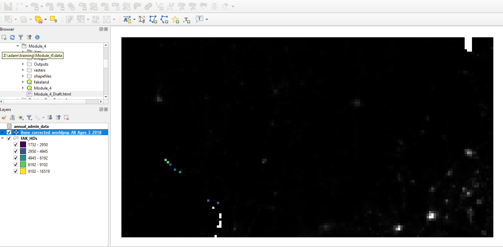
The population raster will appear on the map canvas. It may have covered up the shapefiles - for now this is fine, we can rearrange the layers once we have finished working with the raster.
By clicking on the small arrow next to the raster on the layer panel you can see the minimum value and maximum values. What can we say about the distribution of the population from this raster? Where are the areas of high and low population density?
Unlike shapefiles there is no attribute table connected to a raster.
You can identify the value of an individual raster pixel by clicking the
identification icon  and
selecting an area of the raster. Currently it is difficult to identify
variation in population as most of the raster looks black with a few
lighter coloured pixels. We can modify the appearance by adjusting the
symbology.
and
selecting an area of the raster. Currently it is difficult to identify
variation in population as most of the raster looks black with a few
lighter coloured pixels. We can modify the appearance by adjusting the
symbology.
The steps to change symbology in a raster layer are different from those explained for vector layer.
- Right-click population raster in the layer panel and select “Properties”.
- Go to Symbology, choose “Singleband pseudocolor” from the “Render type” dropdown, and your desired coloring from the “Color ramp” dropdown.
- Select “Quantile” from the “Mode” dropdown
- Click “Classify”. Select Apply and Ok.
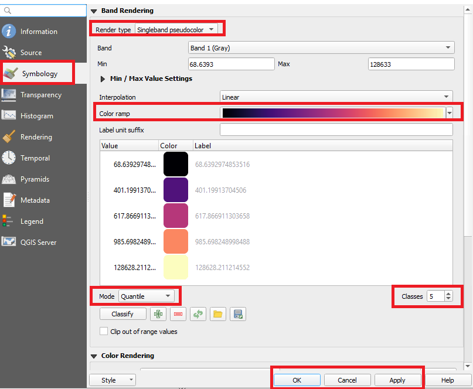
Why do you think we selected “Quantile” instead of “Continuous” from the mode drop-down? How has this changed the appearance of the raster? Re-open the Sybmology panel and adjust the number of classes - how does this change the appearance of the map. Note that you can manually adjust the values associated with each level if needed.
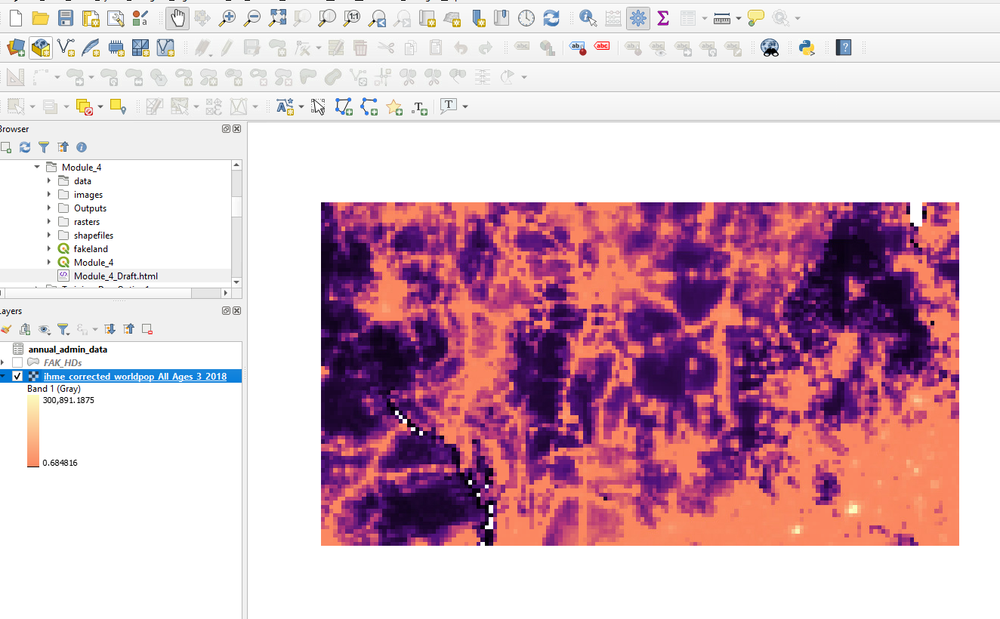
Zonal statistics
We now have a layer of administrative units and a population raster. Using these two pieces we can calculate the population in each administrative unit - this is know as calculating the zonal statistics.
- Go to “Processing” in the menu bar and choose “Toolbox”. A new “processing toolbox” panel will pop-up on the right.
- In this panel type “zonal” in the search window and double-click “Zonal statistics”.
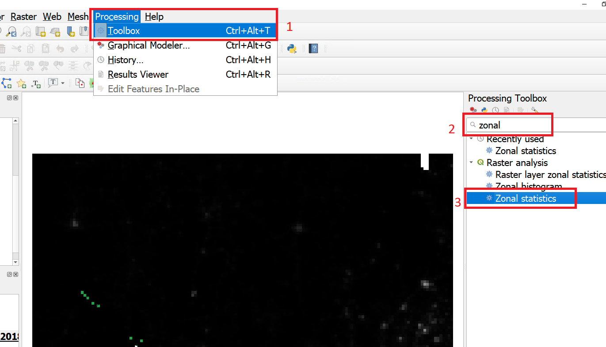
- Choose “FAK_HDs” as the input layer. “ihme_corrected…” as the
raster.
- To select the statistics you want to calculate click browse on the right side of the “Statistics to calculate”. For now we will stick to the pre-selected options (count, sum and mean) however other options are available.
- In the output column prefix type “pop_” or your own label - (this
will result in output fields (pop_count, pop_sum and pop_mean). It is
not absolutely necessary to include a prefix however if you are working
with multiple different rasters it becomes important to keep track of
the origin of the zonal statistics.
- Run and close the window.
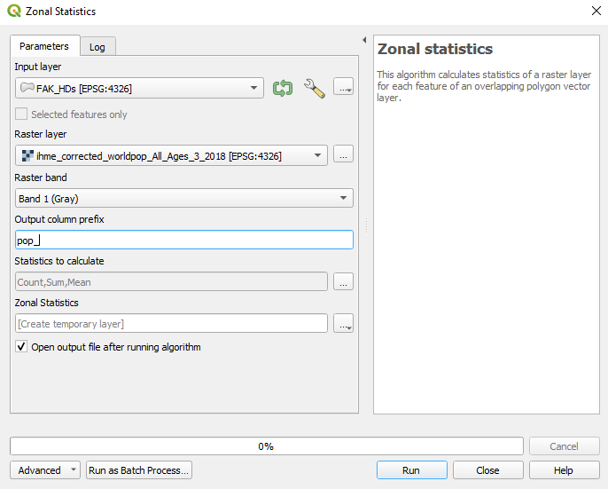
- A new layer “Zonal statistics” will have appeared on the layer panel - it is a copy of the FAK_HDs shapefile however it contains the zonal statistics in is attribute table (Note that some earlier versions of QGIS may attach the zonal statistics directly to the BFA_HDs layer and you will not see this new layer).
- Right-click on the “Zonal_Statistics” layer and select “Open
Attribute Table”
. You will
see the summary statistics at the extreme right of the table. Pop_count
= the number of pixels in the feature; Pop_sum = the sum of the pixel
values (in this case the total population); Pop_mean = mean of the pixel
values (mean population).
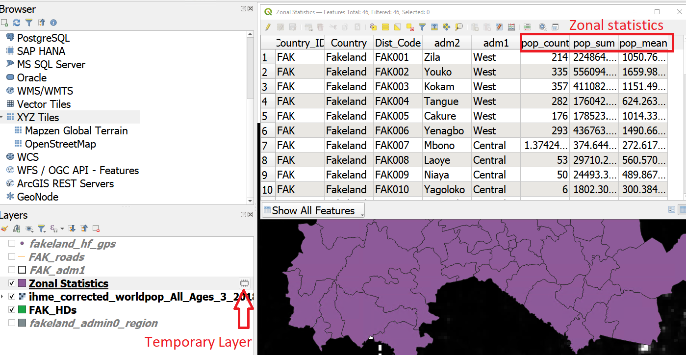
- The zonal statistics layer is temporary and will need to be saved as a shapefile for future use. Right-click on “Zonal_Statistics”, then “Export” and click “Save Feature As”.
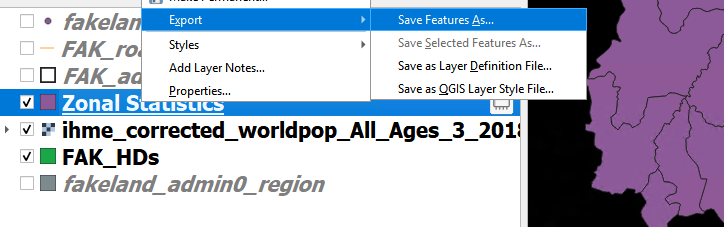
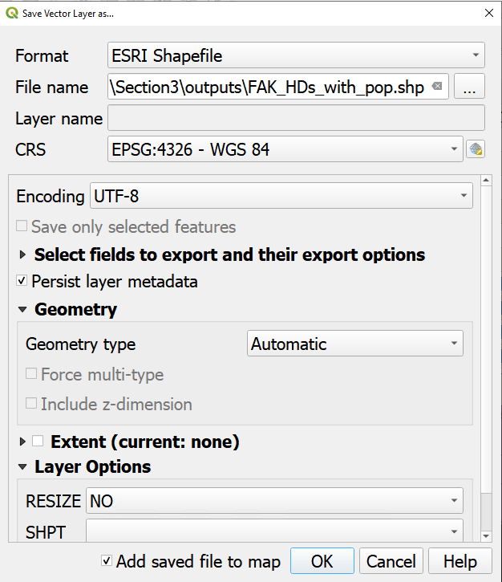
- Navigate to the output folder, give the file name as “FAK_HDs_with_pop” and click Save. Then click Ok.
- This will again create a new layer. You can remove the “Zonal_Statistics” from the layer pane by right-clicking and selecting remove layer
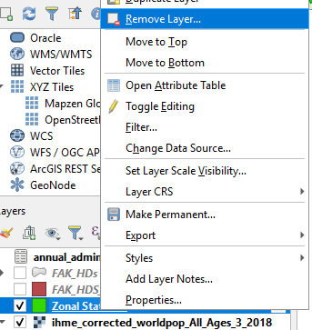
Field calculator
We now have population counts and confirmed malaria for each administration unit. Using these two pieces of information we can calculate the Annual Parasite Index (API) that will give a more standardised comparison between administration units. API (per 1000 people) = Number of cases / population * 1000
- Open the attribute table of the “FAK_HDS_with_pop” layer
- Select field calculator 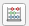from the attribute table menu bar
- In the field calculator pop-up window fill in the “output field name” with “api” and select the output type. In this case it will be a decimal number.
- In the expression box you can write the expression you want to carry out. Just type the field names however if you forget what they are called you can use the “fields and values” dropdown menu on the right. As you can see they are many other tools here we can use for calculation.
- When you are happy your formula is correct click OK.
- Navigate to the final column on the right of your attribute table - you should see a column for “api” has been added.
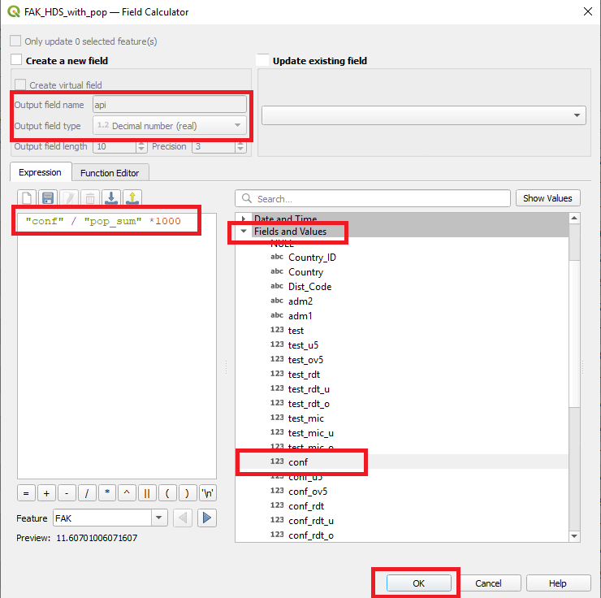
- As we have been editing the attribute table the toggle edit icon 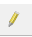 will be selected. When we have finished we need to turn off editing by clicking this button - you will then be prompted to save or discard.
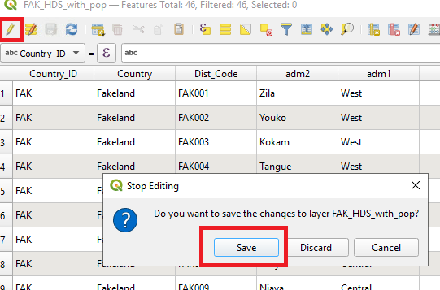
Visualizing API data - Choropleth maps
We will now explore some ways to visualize the data that has been joined.
- Right-click on the “FAK_HDs” layer 1 and select “Properties”.
- Go to “Symbology” 2
- Select “Graduated” 3 from the first drop-down
- Select “api” from the value drop-down 4. This is the API we just calculated
- You can choose your desired color scheme from the Color ramp drop-down 5
- Click “Classify” 6 . The continuous variable “api” will be dived into different bins based on the “mode” selected (see menu above classify) and the number of classes.
- You can change the number of classes 7 and you can manually change the value for each class by double clicking on the Values of the classes in the main panel.
- When you are happy click “Apply” and “Ok”. What does your map look like now?
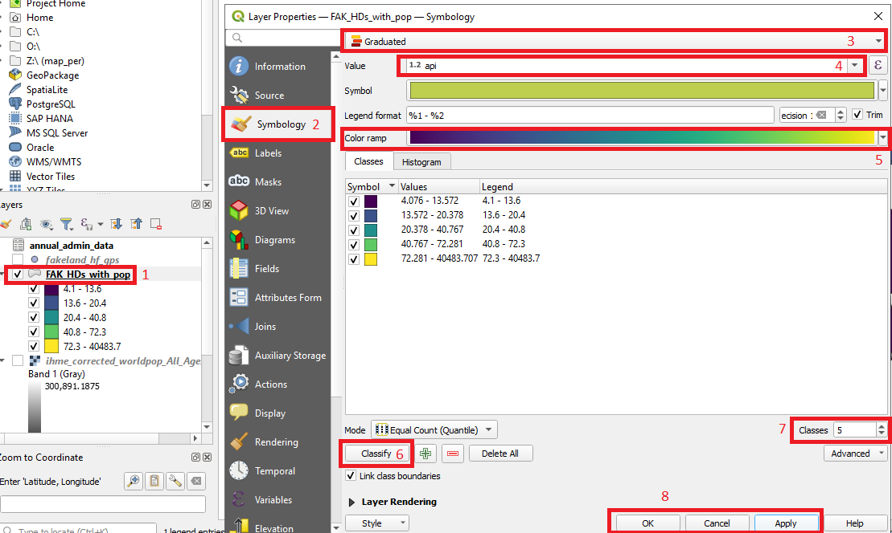
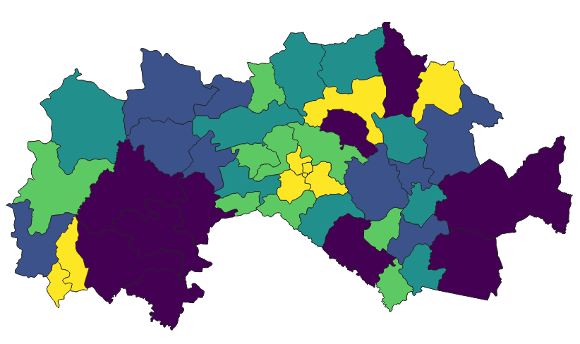
We can now see each Admin 2 unit has been colored based on the settings we just established.
From data to publishable maps
Print layout (previously print composer)
This session takes you through how to generate and export maps for reporting, publications and presentations. QGIS uses the print layout tool (know as print composer in earlier QGIS versions).
-
You may now have many layers in your QGIS project. We want to have layers we want to visualize to the front or turn off the unwanted layers. We focus will focus on the API map
-
From the menu bar click on “Project” and then click “New Print Layout”.
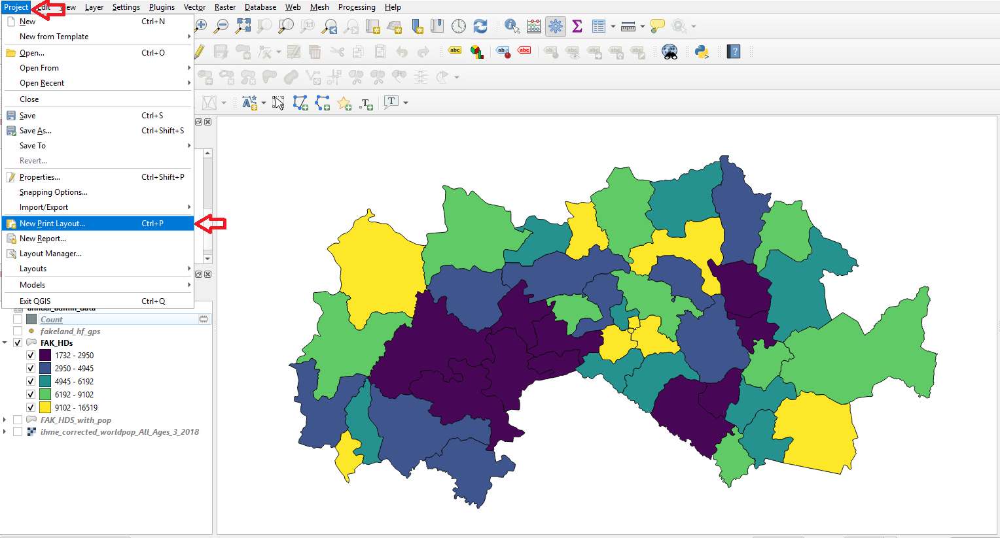
-
From the pop-up window you can name the map or click OK and an automatic name will be created. The print composer window will then open.
-
From the add item menu select “Add map” menu or use the symbol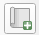 on the left pane to add map.
-
Then left-click on the top left corner, hold and drag to the bottom right corner. Your map will appear in the box you created.
-
If you want to move the map click the move icon on the left 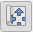. This will allow you to move the map up/down/left and right but also zoom in and out. You should not confuse this with the zoom icon which changes you view of the map but does not actually change the scale of the map on the print composer. If you want a specific scale or extent you can enter specific settings in the item properties tab on the right
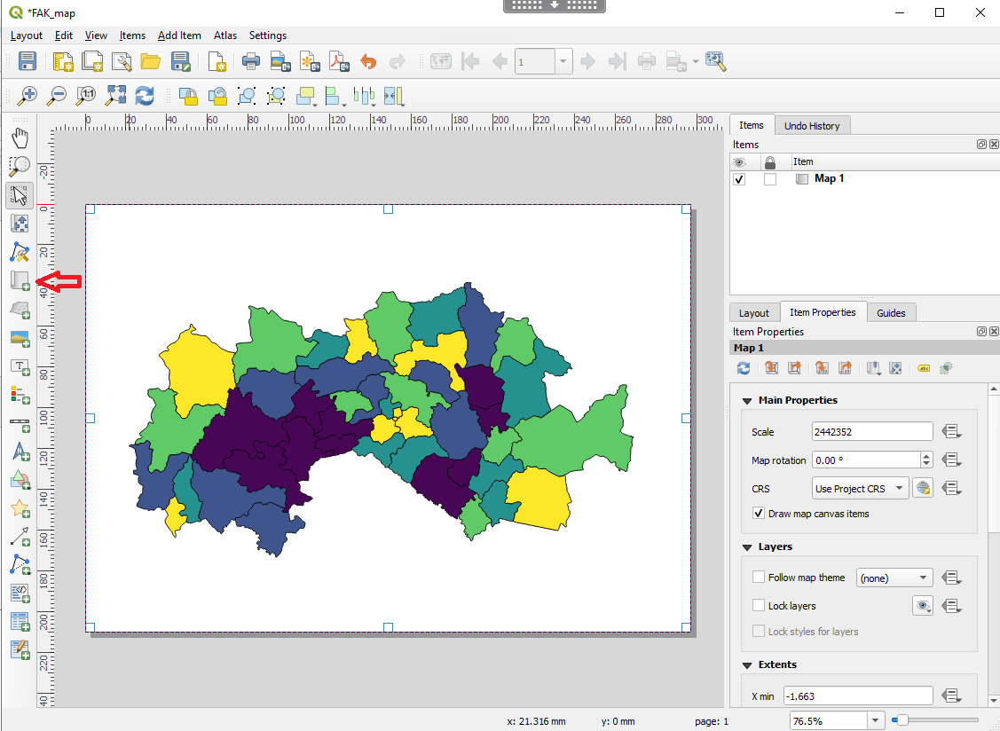
-
Our map is looking a little bare - we can now add features that will give the map some context. Let’s first add a legend. Click on the legend icon on the left and then click and drag on the map where you want the legend.
-
You will see all the items from the Layers panel in the legend - even those that are not visible on the map! We have to clean up the legend and remove labels. In the “Items list” make sure the legend is selected. From there go to the item properties and tick the check box “Only show items inside linked map”. This should reduce the legend down to the layers you can see.
- Alternatively you can manually configure the legend by unchecking the “auto update” box. For any item you do not want in the legend - select it and click the remove the icon . Repeat this for all the items not useful in the legend
-
The legend uses the names of layers but these are not always informative. You can change these simply by double clicking on the label in the “Legend Items” panel. Try changing the FAK_HDs label to something like “Number of confirmed malaria cases”
-
It should be noted that if you change the layers in the main QGIS project it will be reflected in the print composer. Let’s try this out - return to the main QGIS project window (do not close the print window).
-
Change the color scale of the FAK_HDs layer then return to the print window. Has the map changed? It may take a moment or you may need to move the map slightly with so that it updates
-
The map is starting to look better - try adding a North Arrow and a Scale Bar . Each item on the map has customization options that can be accessed from the “Item properties” tab - try a few of them out.
-
Have you added a scale bar? Try to zoom in or out of the map with and see what happens to the scale bar.
-
We can also add a text box
 for titles or labeling. Text, font size and style are all adjusted in
the “item properties” panel.
for titles or labeling. Text, font size and style are all adjusted in
the “item properties” panel.
-
Once you are happy with an item it is advisable to lock it into place. This will stop any accidental moving/zooming. From the items list - check the box next to “Map 1” with the little lock symbol.
-
The previous step is mainly used to prevent unwanted movement. We can also lock-in the color symbology so that if you make changes to the main map canvas the print layout remains the same. In the “Item properties” of the “Map 1” check the tickbox for “lock layers” and “lock styles for layers”.
-
Return to the main QGIS project and change the color scheme again. What has happened in the print composer now?
-
There are many different items that can be added to your map such as arrows and tables - find out more here
Exporting maps
The final step is exporting the map so that it can be used in a report or publication.
- To export the map, go to “Layout” and select “Export as image” (note that you can also choose pdf)
- Choose an appropriate name for the file and save in the output folder.
- You will be prompted to pick a resolutions - 300 dpi is acceptable for most publications
- Open you map from the folder - how does it look?
Help and self learning available for QGIS
There are many very useful sources of help for QGIS. A good place to start is the official QGIS documentation where you will find a detailed description of QGIS and be able to search topics that you may need help in. The training manual that includes easy to follow lessons
https://docs.qgis.org/3.22/en/docs/ https://docs.qgis.org/3.22/en/docs/training_manual/foreword/index.html
A series of tutorials and tips have been put together by contributors on the following website. https://www.qgistutorials.com/en/. The tutorials have been translated to many different languages.
If either of the these two options can not help you can ask specific questions on the https://gis.stackexchange.com/
Optional Extras
We are nearing the end of the tutorial - below are a few optional extras you can try if you have time or want to do further study. The options are:
- Editing the attribute table
- Points in polygon
- How to access open source spatial data
- Plugins - Adding basemaps example
Attribute table editing
There are times we may identify errors in the attribute table and may need to correct them. There may also be unwanted columns that you want to tidy up. In the FAK_HDs_with_pop shapefields we do not have a use for the Pop_count and it can get confused with Pop_sum so it may be best to remove it.
- Open the FAK_HDs_with_pop attribute table by right-clicking and
selecting
2.From the
attribute table window select the toggle edit icon
from the top left corner - this
allows edits to occur.
- To delete a column we can then click on the symbol and simply scroll down and select the column to be deleted.
- While we have editing turned on you can also try to click individual cells of the attribute table. You will be given the option to change the cell contents and is a way to fix any small errors in your dataset.
- To turn off editing click the toggle symbol again . You will be prompted to save or discard your changes - if you are happy click save. Now with the editing turned off try and select the cell contents - you will see it is no longer possible.
QGIS has many other data cleaning and manipulation functions that can be explored. That said it is not a strength of QGIS and so it can be preferable to clean data in Excel or R before using in QGIS.
Optional extra - Points in polygon
There are times we may want to know how many points are in each polygon. In our example it will tell us how many health facilities are in each District but there are many other different use cases.
- From the menu bar select Vector > Analysis tools > Count in Polygon
- The pop-up window will prompt you to select a polygon and a point layer. You can change the name of the count field name - try “Num_HFs”
- Click run
- A new temporary layer will be produced named “Count”. Open the attribute table and inspect the Num_HFs field
- Note that this is a temporary layer and will need to be saved if needed in the future

Open source spatial data
An extensive list of free spatial data can be found on the Free GIS Data website. Please explore and see if there is anything relevant to your work.
As an example, we can download shapefiles of the Philippines boundaries, roads, rail network and rivers.
- Select “DIVA-GIS Country Data” under the “General” heading
- Near the top-right of your scree click “Free Spatial Data” and select “country level data” under the subheading Country Level
- Select “Philippines” from the Country dropdown, then select “Administrative areas” and click “OK”. Save to the appropriate location.
- Repeat step 3 to download other shapefiles by changing the “Subject” heading to “inland water”, “roads” and “railroads”.
From the Free GIS Data website we can also obtain population rasters
- From the main page scroll down to the “Population” section and select “Worldpop”
- In the Worldpop window select “POPULATION DENSITY” from the “DATA” menu. The select “Unconstrained individual countries 2000-2020 (1km resolution)”
- Type “Philippines” in the search box, and you will be able to get the population density data between 2000 and 2020. Choose 2020 data by clicking on the grey box at the end
- Choose the file “phi_pd_2020_1km” and save it to an appropriate location
Plugins
QGIS plugins offer additional functionality to the core QGIS software - much like packages in R. Many popular plugins have been encorporated into QGIS but there are still over 1000 additional plugins available. Here we will look at how we can access the plugins and highlight some of the more popular plugins.
- From the menu bar select “Plugins” and then “Manage and Install plugins”
- The popup window should list the available plugins. In the search bar we will look for “quickmapservices” - this is a popular plugin to access basemaps from Open Street Map, Google etc
- When you have found the plugin click install. Some plugins will appear in the menu bar but many will appear in the toolbar. For quick map services the tool icon is . CLick the icon and click OSM (open street map). The OSM basemap will appear on your map and in the layers list. Now you know where Fakeland is!
- To find other popular base maps you can search the quick map services plugin, again from the select search QMS. A search panel will appear and looks for other basemaps such a Google or basemaps with satellite imagery